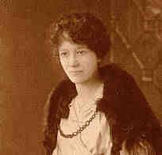

|
|
 Isabella GIALANELLA (1861-1933) |
Isabella GIALANELLA
• She emigrated from Italy. 7 • She appeared in the 1900 census on 5 Jun 1900 in Pittsburgh, Allegheny, PA. 2 • She appeared in the 1910 census on 15 Apr 1910 in Pittsburgh, Allegheny, PA. 4 • She appeared in the 1920 census on 7 Jan 1920 in Pittsburgh, Allegheny, PA. 8 • She appeared in the 1930 census on 8 Apr 1930 in Pittsburgh, Allegheny, PA. 9 Isabella married Leonardo STRAZZA, son of Pasquale STRAZZA and Grazia LUONGO, on 6 Aug 1881 in Andretta, Avellino, Campania, Italy.1 2 (Leonardo STRAZZA was born in Aug 1857 in Naples, Italy,2 died on 2 Jul 1915 in Pittsburgh, Allegheny, PA 10 and was buried on 4 Jul 1915 in Calvary Cemetery, Pittsburgh, Allegheny, PA 10.) |
1 Italia, Avellino, Stato Civile (Archivio di Stato), 1809-1947., Vital Records, 1809-1947 (Database with images. FamilySearch. https://FamilySearch.org : 10 July 2023.).
2 Pennsylvania, Allegheny County, 1900 U.S. Census, Population Schedule (Washington, D.C., National Archives and Records Administration), ED 257, Sheet 4, Line 22.
3 Commonwealth of Pennsylvania, Department of Health, Bureau of Vital Statistics, Death Certificate - Elizabeth Gialinelli Strazza (20 Oct 1933).
4 Pennsylvania, Allegheny County, 1910 U.S. Census, Population Schedule (Washington, D.C., National Archives and Records Administration), ED 528, Sheet 2, Line 81.
5 Funeral Home, Mass Card (Obtained from Helen (Yalenty) LaMarca).
6 Thomas Hoey, Oral Interview of Evelyn Strazza (Pittsburgh, PA, 29 Jun 2000).
7 Thomas Hoey, Oral Interview of Helen Yalenty LaMarca (Pittsburgh, PA), 1996.
8 Pennsylvania, Allegheny County, 1920 U.S. Census, Population Schedule (Washington, D.C., National Archives and Records Administration), ED 631, Sheet 4, Line 40.
9 Pennsylvania, Allegheny County, 1930 U.S. Census, Population Schedule (Washington, D.C., National Archives and Records Administration), ED 2-315, Sheet 11, Line 7.
10 Commonwealth of Pennsylvania, Department of Health, Bureau of Vital Statistics, Pennsylvania Death Certificates, 1906-1970 (Harrisburg, PA (via Ancestry.com)), Leonard Strazza (filed 4 Jul 1915).